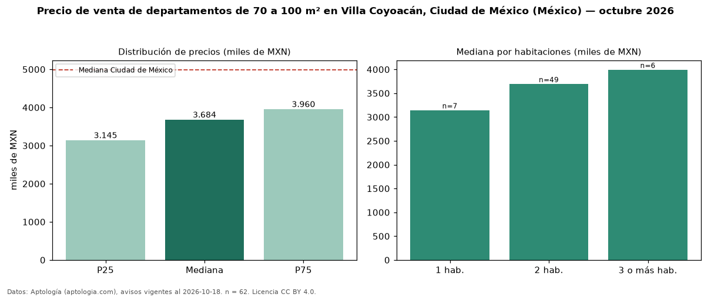

Precio de venta de departamentos de 70 a 100 m² en Villa Coyoacán, Ciudad de México (México) — octubre 2026
Con 62 avisos vigentes, el precio mediano de departamentos de 70 a 100 m² en venta en Villa Coyoacán, Ciudad de México (México) es MXN 3,68 millones. Eso es 15 % más que la mediana de todos los departamentos en venta de Villa Coyoacán (MXN 3,21 millones, n = 153); este segmento reúne el 41 % de esos avisos. Por metro cuadrado, la mediana es MXN 44.711/m² (n = 62), 4 % por encima del conjunto de referencia (MXN 43.000/m²). El área mediana anunciada es 83 m². El segmento con más oferta es el de 2 habitaciones (49 avisos, mediana MXN 3,70 millones); pasar de 1 habitación a 3 o más habitaciones cambia la mediana +27 %. La mediana de todos los departamentos en venta de Ciudad de México es MXN 4,99 millones (−26 % de diferencia). La mitad central de los avisos va de MXN 3,15 millones a MXN 3,96 millones (razón 1,3), una dispersión baja. Datos: Aptología (aptologia.com), CC BY 4.0 — https://www.aptologia.com/. Archivos: PDF, CSV con las cifras y gráfica PNG.

| Avisos únicos | 62 |
|---|---|
| Percentil 25 | COP 3.145.006 |
| Mediana | COP 3.684.478 |
| Percentil 75 | COP 3.960.003 |
| Mediana por m² | COP 44.711 |
Fuente: avisos vigentes de portales inmobiliarios recopilados por Aptología, deduplicados (mínimo 30 avisos únicos por celda). Precios pedidos, no cerrados. Fecha: 2026-10-18.